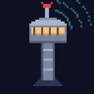
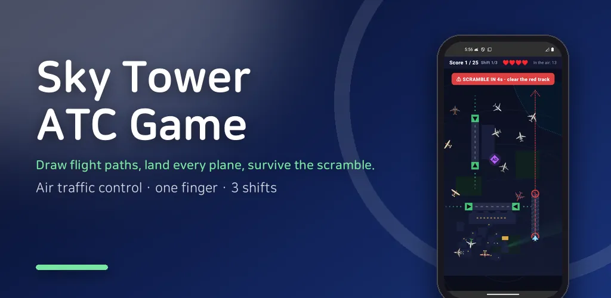
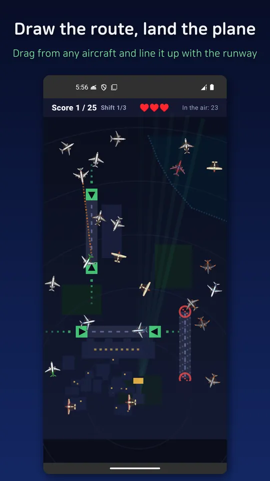
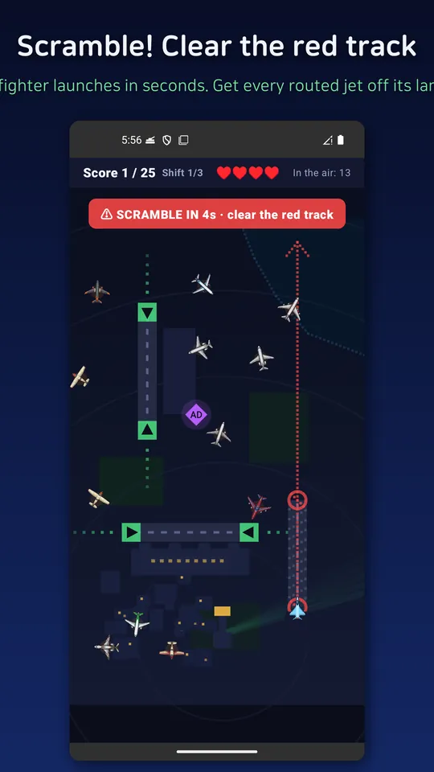
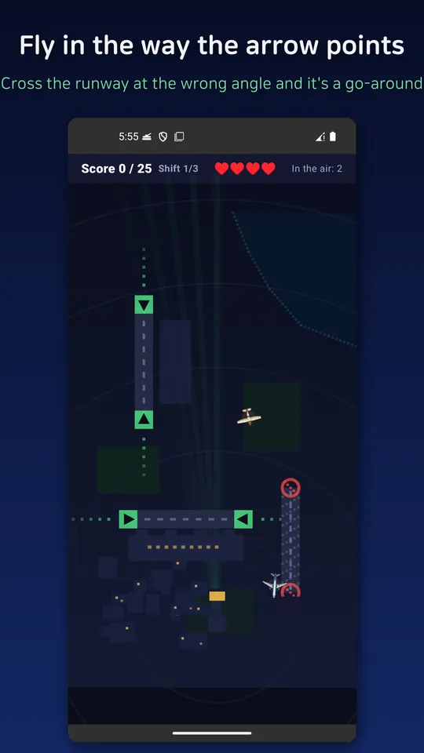
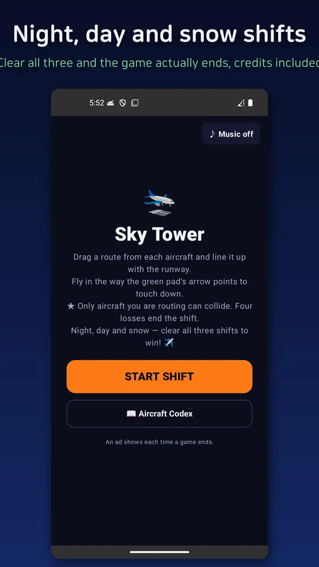

Air Traffic Control: Sky Tower
Draw flight paths with your finger and land every plane. A casual ATC arcade!





About this app
Starting today, you are the tower.
Planes keep pouring in from the top of the screen, and you have exactly one job: draw a path with your finger and land every aircraft safely. It sounds simple — until the skies get crowded.
✈️ Draw the path with your finger
Drag an aircraft and a route trails behind it; the plane follows that line. But like a real aircraft, it can't turn on a dime. Plan for its turning radius and guide it in smoothly.
🛬 Line up with the runway to land
Drifting over a runway isn't enough. The approach angle has to be right for the gear to come down (the arrow on the green pad shows you which way). Get it wrong and the plane flies straight past (go-around), so you'll have to swing it around and try again.
🌃 Night → Day → Snow: three shifts
There are three stages. Your first shift is a starlit night airport, then a daytime field, and finally a snowy airfield with falling snow. Hit the target score to move to the next posting, and clear all three shifts to reach the ending — credits roll and all. The later the shift, the busier the sky and the more frequent the scrambles.
⚠️ Only the aircraft you're routing is at risk — three lives
Just the planes you've drawn a route for can collide. Untouched aircraft simply pass each other, so you don't have to control everything at once. But the moment you draw a route to land one, that aircraft becomes vulnerable. You survive three collisions; the fourth ends your shift.
🚨 Scramble — the tension only this game has
Think you'll just calmly land planes all day? Suddenly a fighter scrambles from the base. You get a warning before it lifts off and its departure track lights up red, so clear that lane in the crowded sky and get it out the north exit before time runs out. Saving the airliners while launching the fighter — those few seconds are the heart of this game.
💠 Six supply badges in the sky
Badges appear in the air now and then. Fly a routed aircraft through one to collect it — the instant ones ½ (everything slows briefly) · ×2 (double score briefly) · ♥ (recover a life), plus ones you stock under your score and tap when things get tight: II (the whole sky freezes for 10 seconds — lay out routes in advance) · ▼ (shield 5 aircraft and auto-land them). There's even an optional supply request (AD) to watch an ad for one more item — completely optional, never forced.
🏆 Arcade-style leaderboard
Every aircraft you land safely adds to your score (with a bonus for getting a scrambled fighter out clean). When the game ends, enter your three-letter initials arcade-style to post to the leaderboard — records are saved on your device, so face yesterday's you in the hall of fame on the home screen.
📖 Aircraft codex & music
Browse the 12 airliners and the interceptor that fill the skies in the codex (all fictional aircraft), and enjoy five self-composed tracks that change from shift to shift (mute anytime from home).
Completely free · offline
No server, no sign-up, no internet needed. Play on the subway or on a flight — anywhere, instantly.
Recommended for
- Fans of short, intense casual games
- Anyone who enjoys line-drawing / traffic-control style games
- People confident in their reflexes and multitasking
※ All aircraft, callsigns, and runways in the game are fictional creations.
Android · free with ads · Developer: RealTunaLove · Store listing in 17 languages
Background story: why I built it